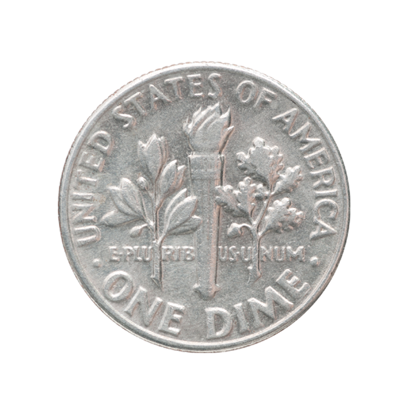

Dime
Article: 7635202
Dime is a 10-cent coin of the United States that has been minted from 1946 to the present. This is a unique coin with the image of a torch, oak and olive branches.
The obverse of the coin depicts a portrait of the 32nd President of the United States, Franklin D. Roosevelt, and the reverse depicts a torch, oak and olive branches above the motto "E pluribus unum" - "Out of many."
After the death of Franklin Roosevelt in 1945, it was decided to put his image on a coin to perpetuate his memory. The choice of a coin denomination of 10 cents was due to the fact that in 1938 Roosevelt made a lot of efforts to create the National Foundation, which is half joking, and since 1979 it has been officially called the "March of Dimes".
Price 10$
| Year | 1946 |
| Face value | 10 cents |
| Issuing country | UNITED STATES OF AMERICA |
| Minting quality | BU |
| Metal | nickel |
| Weight of precious metal in coin, g | 4.25 g |